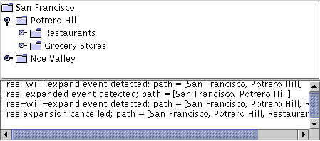

Feedback Form
|
|
Start of Tutorial > Start of Trail > Start of Lesson |
Search
Feedback Form |
As explained in How to Write a Tree Expansion Listener, you can use a tree-will-expand listener to prevent a treenode from expanding or collapsing. To be notified just after an expansion or collapse occurs, you should use a tree expansion listener instead.
The following demo adds a tree-will-expand listener to the
TreeExpandEventDemoexample discussed in How to Write a Tree Expansion Listener. The new code demonstrates the ability of tree-will-expand listeners to veto node expansions and collapses: it asks for confirmation each time you try to expand a node.
 [PENDING: updated screenshot with sample output forthcoming.]
Try this:
- Run TreeExpandEventDemo2 using JavaTM Web Start. Or, to compile and run the example yourself, consult the example index.
- Click the graphic to the left of the Potrero Hill node. This tells the tree that you want to expand the node.
A dialog appears asking you whether you really want to expand the node.- Click "Expand" or dismiss the dialog.
Messages in the text area tell you that both a tree-will-expand event and a tree-expanded event have occurred. At the end of each message is the path to the expanded node.- Try to expand another node, but this time press the "Cancel Expansion" button in the dialog.
The node does not expand. Messages in the text area tell you that a tree-will-expand event occurred, and that you cancelled a tree expansion.- Collapse the Potrero Hill node.
The node collapses without a dialog appearing, because the event handler'streeWillCollapsemethod lets the collapse occur, uncontested.The following snippet shows the code that this program adds to
TreeExpandEventDemo. The bold line prevents the tree expansion from happening. You can find all the demo's source code inTreeExpandEventDemo2.java.
public class TreeExpandEventDemo2 ... { ... class DemoArea ... implements ... TreeWillExpandListener { ... public DemoArea() { ... tree.addTreeWillExpandListener(this); ... } ... //Required by TreeWillExpandListener interface. public void treeWillExpand(TreeExpansionEvent e) throws ExpandVetoException { saySomething("Tree-will-expand event detected", e); //...show a dialog... if (/* user said to cancel the expansion */) { //Cancel expansion. saySomething("Tree expansion cancelled", e); throw new ExpandVetoException(e); } } //Required by TreeWillExpandListener interface. public void treeWillCollapse(TreeExpansionEvent e) { saySomething("Tree-will-collapse event detected", e); } ... } }
The TreeWillExpandListener Interface
TreeWillExpandListenerhas no adapter class.
Method Purpose treeWillCollapse(TreeExpansionEvent)Called just before a tree node collapses. To prevent the collapse from occurring, your implementation of this method should throw a ExpandVetoExceptionevent.
treeWillExpand(TreeExpansionEvent)Called just before a tree node expands. To prevent the expansion from occurring, your implementation of this method should throw a ExpandVetoExceptionSee The Tree Expansion Event API for information about the
TreeExpansionEvent
TreeExpandEventDemo2,
featured in this section,
is our only example that uses a tree-will-expand listener.
|
|
Start of Tutorial > Start of Trail > Start of Lesson |
Search
Feedback Form |
Copyright 1995-2004 Sun Microsystems, Inc. All rights reserved.